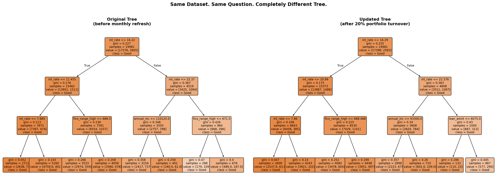

Your Decision Tree
Restructured Overnight.
A routine data refresh caused 100% of decision tree splits to change, while a Random Forest barely noticed. Here's why it happens, what to do about it, and how to prove it with real confusion matrices on LendingClub data.
The Stability Problem
Your decision tree looks clean. The splits make sense. You can explain every branch to a stakeholder in plain English. Then you update the data. And the entire tree restructures.
Same borrowers. Same question. Completely different model. That's not a bug. That's the nature of decision trees. And it's why relying on them alone for prediction is a serious risk in any production environment.
In this tutorial we demonstrate this with real LendingClub loan data. We simulate a realistic monthly portfolio refresh (20% of loans close, 20% new ones arrive) and show exactly what happens to both a decision tree and a Random Forest.
Loan Amt
Description vs. Prediction
This is the distinction that changes how you think about decision trees entirely:
Decision trees are powerful for description: understanding the splits that define risk right now, at this moment, with this data.
Decision trees are fragile for prediction, because the model you deploy today may look nothing like the model you'd build tomorrow after a routine data refresh.
Decision trees are greedy algorithms. At every split they choose the feature that best separates the data at that exact moment. Change a few hundred rows out of 25,000 (a normal monthly data refresh) and the best split at the root node might change entirely. When the root changes, every branch below it changes. The whole tree shifts.
Random Forest fixes the fragility by building hundreds of trees, each on a slightly different sample of the data, and averaging their predictions. No single tree dominates. A change in a few hundred rows shifts one or two trees out of five hundred, barely a ripple in the final prediction.
Imports
import warnings
warnings.filterwarnings('ignore')
import pandas as pd
import numpy as np
import matplotlib.pyplot as plt
from sklearn.tree import DecisionTreeClassifier, export_text, plot_tree
from sklearn.ensemble import RandomForestClassifier
from sklearn.model_selection import train_test_split
from sklearn.metrics import (
accuracy_score, recall_score, precision_score,
f1_score, confusion_matrix, classification_report
)
# Install if needed:
# pip install scikit-learn pandas numpy matplotlibLoad the LendingClub Dataset
We use five borrower features from a 25,000-loan LendingClub sample. The target is bad_loan: 1 means the loan defaulted, 0 means it was repaid. The overall bad loan rate is approximately 13%.
DATA_PATH = "lendingclub_sample_25000.csv" # update path if needed
df = pd.read_csv(DATA_PATH, low_memory=False)
FEATURES = ['int_rate', 'dti', 'fico_range_high', 'annual_inc', 'loan_amnt']
TARGET = 'bad_loan'
df = df[FEATURES + [TARGET]].dropna()
df[TARGET] = pd.to_numeric(df[TARGET], errors='coerce')
df = df.dropna()
X = df[FEATURES]
y = df[TARGET].astype(int)
print(f"Dataset: {len(df):,} loans | Bad loan rate: {y.mean():.1%}")
X_train, X_test, y_train, y_test = train_test_split(
X, y, test_size=0.2, random_state=42, stratify=y
)Train the Original Decision Tree
We use max_depth=3 to keep the tree shallow enough to read and explain, which is exactly the use case where decision trees shine. Deeper trees become unreadable but are even more sensitive to data changes.
dt_original = DecisionTreeClassifier(max_depth=3, random_state=42)
dt_original.fit(X_train, y_train)
print("ORIGINAL DECISION TREE:")
print(export_text(dt_original, feature_names=FEATURES))
# Visualise the tree
plt.figure(figsize=(20, 8))
plot_tree(dt_original, feature_names=FEATURES,
class_names=["Good", "Default"],
filled=True, rounded=True, fontsize=9)
plt.title("Original Decision Tree (before monthly refresh)")
plt.tight_layout()
plt.show()Simulate a Monthly Data Refresh
Every month, loans close or are paid off and new ones are originated. We simulate this realistically: 20% of the training loans are removed and replaced with new ones that have slightly higher interest rates and slightly lower FICO scores, a plausible shift in any rising-rate environment.
np.random.seed(42)
n = len(X_train)
# Remove 20% of existing loans (paid off / closed)
keep_idx = np.random.choice(X_train.index, int(n * 0.80), replace=False)
X_keep = X_train.loc[keep_idx]
y_keep = y_train.loc[keep_idx]
# Add 20% new loans — rates up ~0.5%, FICO down ~5 points
n_new = n - len(keep_idx)
X_new = X_keep.sample(n_new, replace=True, random_state=7).copy()
X_new['int_rate'] += np.random.normal(0.5, 0.3, n_new)
X_new['fico_range_high'] += np.random.normal(-5, 3, n_new)
X_new.index = range(max(X_train.index)+1, max(X_train.index)+1+n_new)
y_new = y_keep.sample(n_new, replace=True, random_state=7)
y_new.index = X_new.index
X_train_updated = pd.concat([X_keep, X_new])
y_train_updated = pd.concat([y_keep, y_new])
print(f"Original training set: {len(X_train):,} loans")
print(f"Updated training set: {len(X_train_updated):,} loans")
print(f"Rows changed: {n_new:,} ({n_new/n:.0%} of portfolio)")Compare the Splits: Before vs. After
Now we retrain the decision tree on the updated dataset and compare every split. The results are striking.
dt_updated = DecisionTreeClassifier(max_depth=3, random_state=42)
dt_updated.fit(X_train_updated, y_train_updated)
print("UPDATED DECISION TREE:")
print(export_text(dt_updated, feature_names=FEATURES))
# Compare splits node by node
def get_splits(tree, feature_names):
return [
(feature_names[tree.feature[i]], round(tree.threshold[i], 2))
for i in range(tree.node_count)
if tree.feature[i] >= 0
]
splits_orig = get_splits(dt_original.tree_, FEATURES)
splits_updated = get_splits(dt_updated.tree_, FEATURES)
n_changed = sum(1 for a, b in zip(splits_orig, splits_updated) if a != b)
print(f"\n{n_changed} of {len(splits_orig)} splits changed "
f"({n_changed/len(splits_orig):.0%}) after a routine refresh")⚠️ = meaningfully different threshold or completely different feature. The income threshold shifted by $16,825. The bottom-right branch switched from FICO score to loan amount entirely.
The tree visualization below shows this visually: the same portfolio, the same question, two completely different structures:

Figure: Original tree (left) vs. updated tree after 20% portfolio turnover (right). The bottom-right branch switches from fico_range_high ≤ 671.50 to loan_amnt ≤ 6075.0, a completely different feature. The income threshold defining "high income" shifts by $16,825.
Random Forest: Why It's Stable
Random Forest builds hundreds of trees, each on a bootstrap sample of the data with a random subset of features at each split. No single tree dominates the final prediction: the model votes.
# Train on original data
rf_original = RandomForestClassifier(
n_estimators=500,
random_state=42,
n_jobs=-1 # use all available cores
)
rf_original.fit(X_train, y_train)
# Train on updated data
rf_updated = RandomForestClassifier(
n_estimators=500,
random_state=42,
n_jobs=-1
)
rf_updated.fit(X_train_updated, y_train_updated)
# Feature importance — note how stable it is
importance_df = pd.DataFrame({
'Feature': FEATURES,
'Original': rf_original.feature_importances_,
'Updated': rf_updated.feature_importances_,
}).sort_values('Original', ascending=False)
print("Feature importance (original vs updated):")
print(importance_df.round(3).to_string(index=False))Prediction Stability Comparison
Here's the direct comparison: how many borrowers in the test set received a different prediction after the monthly refresh:
dt_pred_orig = dt_original.predict(X_test)
dt_pred_updated = dt_updated.predict(X_test)
dt_flipped = (dt_pred_orig != dt_pred_updated).mean()
rf_pred_orig = rf_original.predict(X_test)
rf_pred_updated = rf_updated.predict(X_test)
rf_flipped = (rf_pred_orig != rf_pred_updated).mean()
print(f"Prediction changes after monthly data refresh:")
print(f" Decision Tree: {dt_flipped:.1%} of borrowers flipped")
print(f" Random Forest: {rf_flipped:.1%} of borrowers flipped")
print(f"\nAbsolute counts (test set = {len(y_test):,} borrowers):")
print(f" Decision Tree: {(dt_pred_orig != dt_pred_updated).sum()} flipped")
print(f" Random Forest: {(rf_pred_orig != rf_pred_updated).sum()} flipped")Confusion Matrix Comparison
The confusion matrices tell the complete story. Same test set. Same 4,996 borrowers. Before vs. after the monthly refresh.
def show_cm(name, y_true, y_pred):
cm = confusion_matrix(y_true, y_pred)
tn, fp, fn, tp = cm.ravel()
acc = accuracy_score(y_true, y_pred)
rec = recall_score(y_true, y_pred, zero_division=0)
pre = precision_score(y_true, y_pred, zero_division=0)
print(f"\n{name}")
print(f" TN={tn:,} FP={fp:,} FN={fn:,} TP={tp:,}")
print(f" Accuracy={acc:.1%} Recall={rec:.1%} Precision={pre:.1%}")
return tn, fp, fn, tp
print("DECISION TREE")
show_cm("Original", y_test, dt_pred_orig)
show_cm("Updated", y_test, dt_pred_updated)
print("\nRANDOM FOREST")
show_cm("Original", y_test, rf_pred_orig)
show_cm("Updated", y_test, rf_pred_updated)Decision Tree
Random Forest
But You Lose Something
Random Forest solves the fragility problem. But it costs you the single interpretable tree you could draw on a whiteboard. You gain stability. You lose the ability to explain a specific decision to a credit committee, a regulator, or a borrower who was declined.
That trade-off is almost always worth making for prediction. But it leaves a real problem unsolved: how do you explain a Random Forest's decision?
Browse all tutorials in Resources.
Back to Resources →